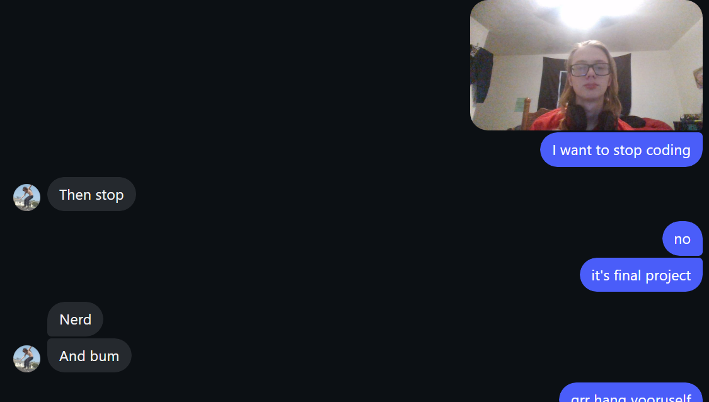

Most of the challenges I had (and am still having) while making this story mostly stem from my ADHD. Sometimes I'll jump up from my chair, giddy and excited from getting a brand new, fresh idea for a scene or chapter in the story and immediately start writing it down... or I'll lie in bed completely demotivated to even open the document. It really sucks sometimes, but when I get in a groove, I get in a GROOVE. So that's cool, I guess.
I also sometimes struggle with just, the lack of ideas. As of today, September 25, 2026, I'm currently trying to decide what happens in November, which is largely a filler month between October, a busy month for group 2, and December, which... while simultaneously jumping back and forth between those months and earlier ones, or even later ones. Can't stay in one place consistently. It's hard to consistently brainstorm new ideas for the story when you're nearing the end, while also not nearing the end at all. It gets exhausting. But what I do have, I am pretty proud of, and none of it feels excessive unlike how HIMSON was getting to be, so I have that going for me.